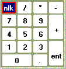
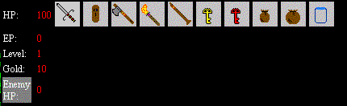

How To:
The evil black knight kidnapped the princess to take over the Kingdom of Light. You must save her before time run out. You solve the clues and puzzles along the way to collect item and experience to help you.
To move around use the number keypad. Be sure that the Num lock is on.

0 - uses Herb, if you have both half and full herbs. A message will ask which one to use. Press Ok to use the full herb and Cancel to use the half herb.
| 8 - move up | ||
| 4 - move left | 5 - action | 6 - move right |
| 2 - move down |
Player Board:

This dashboard shows the player status and the items in inventory you have currently collected. You start with 100 hit points, 0 experience points, experience level 1, and 10 gold coins.
When you enter a fight scene, the enemy hit points display their live meter as you attack.
The inventory items are as follows: sword, shield, axe, torch, flute, golden key, red key, herb (half or full), bottle. These items are use to help you along your journey. Good Luck!
Tip:
Here is some tip to help you play the game. You can pick and choose your enemy. Avoid fighting enemy with hit points above 3 in the beginning until your level increase. Also get the axe as soon as possible.
About the Author:
I have written many programs to help with the everyday task. I thought I would try a game in JavaScript. I found this game engine on plantsourcecode.com. The original programmer (unknown) has started out with the basic actions, moving around and jumping scenes. I change the game engine to meet my needs and came up with some puzzles, fight scene, enemy ,town people, and a plot.
I hope you enjoy playing as must as I was making it, since this is my first real game.